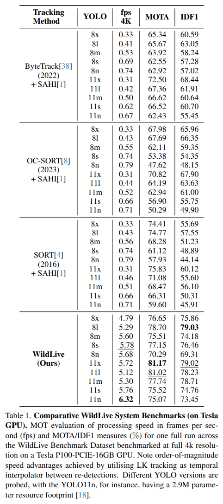
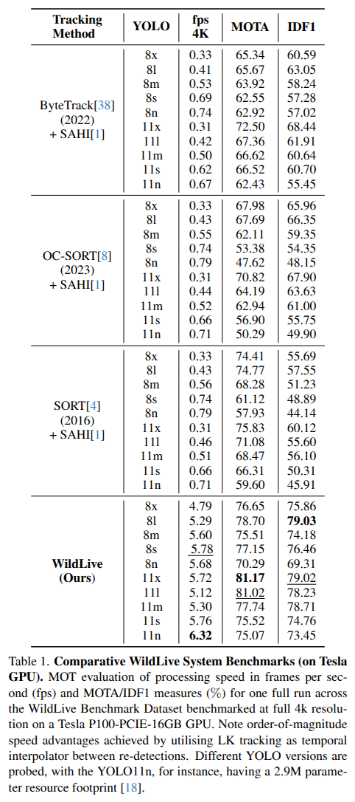

Abstract
Live tracking of wildlife via high-resolution video processing directly onboard drones is widely unexplored and most existing solutions rely on streaming video to ground stations to support navigation. Yet, both autonomous animal-reactive flight control beyond visual line of sight and/or mission-specific individual and behaviour recognition tasks rely to some degree on this capability. In response, we introduce WildLive -- a near real-time animal detection and tracking framework for high-resolution imagery running directly onboard uncrewed aerial vehicles (UAVs). The system performs multi-animal detection and tracking at 17fps+ for HD and 7fps+ on 4K video streams suitable for operation during higher altitude flights to minimise animal disturbance. Our system is optimised for Jetson Orin AGX onboard hardware. It integrates the efficiency of sparse optical flow tracking and mission-specific sampling with device-optimised and proven YOLO-driven object detection and segmentation techniques. Essentially, computational resource is focused onto spatio-temporal regions of high uncertainty to significantly improve UAV processing speeds without domain-specific loss of accuracy. Alongside, we introduce our WildLive dataset, which comprises 200k+ annotated animal instances across 19k+ frames from 4K UAV videos collected at the Ol Pejeta Conservancy in Kenya. All frames contain ground truth bounding boxes, segmentation masks, as well as individual tracklets and tracking point trajectories. We compare our system against current object tracking approaches including OC-SORT, ByteTrack, and SORT. Our multi-animal tracking experiments with onboard hardware confirm that near real-time high-resolution wildlife tracking is possible on UAVs whilst maintaining high accuracy levels as needed for future navigational and mission-specific animal-centric operational autonomy. We publish all source code, weights, dataset, and labels for easy utilisation by the community.
The WildLive Benchmark Dataset (will be available soon)
Our dataset contains 215,800 bounding boxes and animal segmentation masks along its 291 zebra, giraffe, and elephant tracklets, plus 84 point tracks across 22 UAV-acquired 4K video sequences, totaling 19,139 frames recorded on site at the Ol Pejeta Conservancy in Kenya. Acquisition was conducted via DJI Mavic 3 Enterprise and Pro drones plus a custom-built quadcopter for wildlife missions. Overall, the dataset provides verified animal bounding boxes and SAM2 segmentations, tracklet IDs, as well as manually corrected, sparse LK pixel trajectories.

WildLive Method.
Our WildLive framework is optimised for near real-time high-resolution video stream tracking onboard drones. It integrates SAHI sampling and YOLO object detection with light-weight sparse optical flow LK tracking and YOLO instance segmentation to localise and follow animals live on UAV platforms.
 

Results
Full results are shown in the above table and confirm order-of-magnitude gains in processing speed (up to 6.32fps) compared to other tested techniques resting on only intermittent re-detection bridged by computationally negligible LKP point tracking. Accuracy, maybe surprisingly, slightly improves too, leading to best MOTA at 81.17% and IDF1 at 79.03%: utilising PoA and IoU together for ambiguity resolution proves superior compared to IoU-centred full object tracking methods tested which have no direct access to segmentation masks.
Citation
@misc{dat2025wildlivenearrealtimevisual,
title = {WildLive: Near Real-time Visual Wildlife Tracking onboard UAVs},
author = {Nguyen Ngoc Dat and Tom Richardson and Matthew Watson and Kilian Meier and Jenna Kline and Sid Reid and Guy Maalouf and Duncan Hine and Majid Mirmehdi and Tilo Burghardt},
year = {2025},
eprint = {2504.10165},
archivePrefix= {arXiv},
primaryClass = {cs.CV},
url = {https://arxiv.org/abs/2504.10165}
}